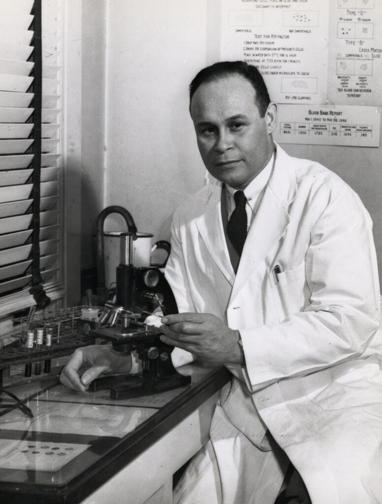

Charles Richard Drew

Charles Richard Drew foi um médico e pesquisador afro-americano pioneiro na medicina transfusional. Ele revolucionou o armazenamento e transporte de sangue, tornando os bancos de sangue modernos uma realidade. Suas pesquisas salvaram inúmeras vidas durante a Segunda Guerra Mundial e continuam a impactar a medicina até hoje.
Principais Contribuições
- Desenvolveu um método eficiente para armazenar plasma sanguíneo, prolongando sua validade e viabilizando a criação dos bancos de sangue.
- Foi diretor do primeiro grande banco de sangue da Cruz Vermelha Americana.
- Desafiou a segregação racial na medicina, lutando contra a política de separação de sangue por raça.
- Treinou e inspirou gerações de médicos afro-americanos no ensino superior.
Saiba mais
Voltar